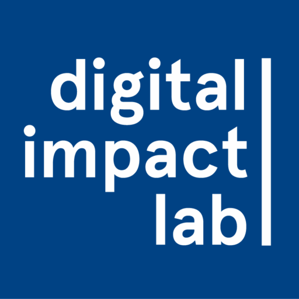

TOOL 01
Ersetzt KI meinen Job?
Prüft, wie stark einzelne Berufe und Fähigkeiten von KI betroffen sein könnten.
Die Einschätzung ist eine Orientierung, keine sichere Vorhersage.
Tool öffnen

KI & BerufInteraktive LernstationEntdecken. Ausprobieren. Verstehen.Phase 1 · Entdecken
Nimm dir 10 bis 15 Minuten Zeit, probiere beide Tools selbst aus und finde heraus, wie sie Berufe und Tätigkeiten einschätzen.